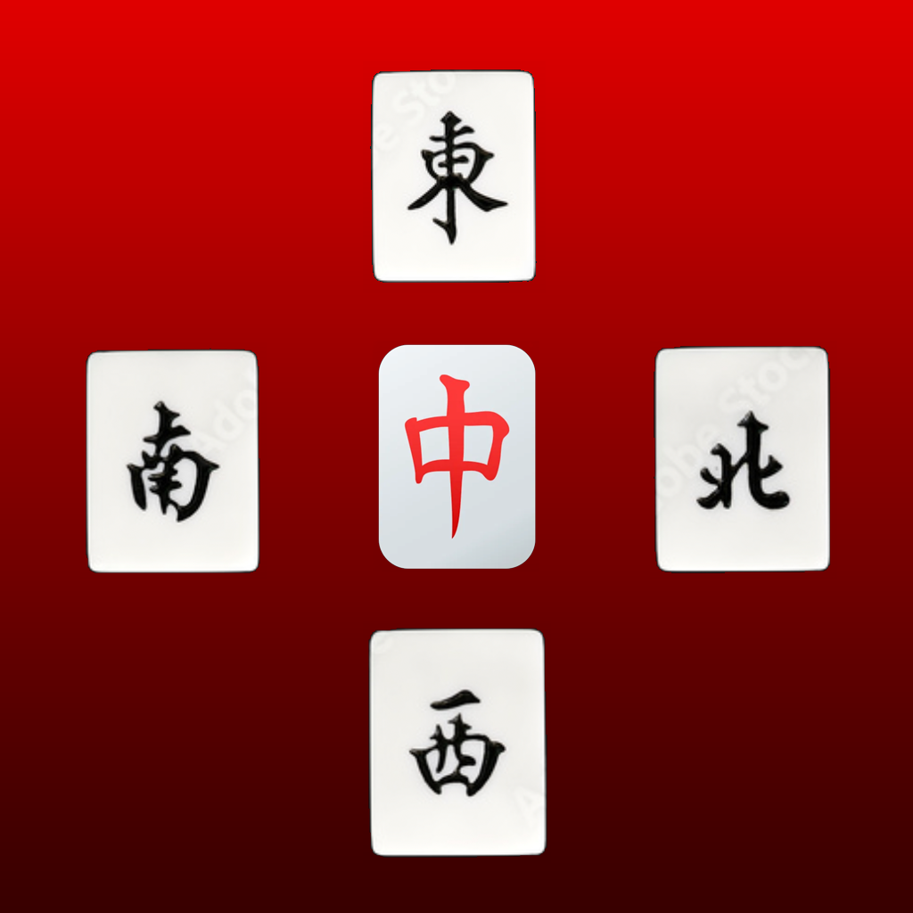
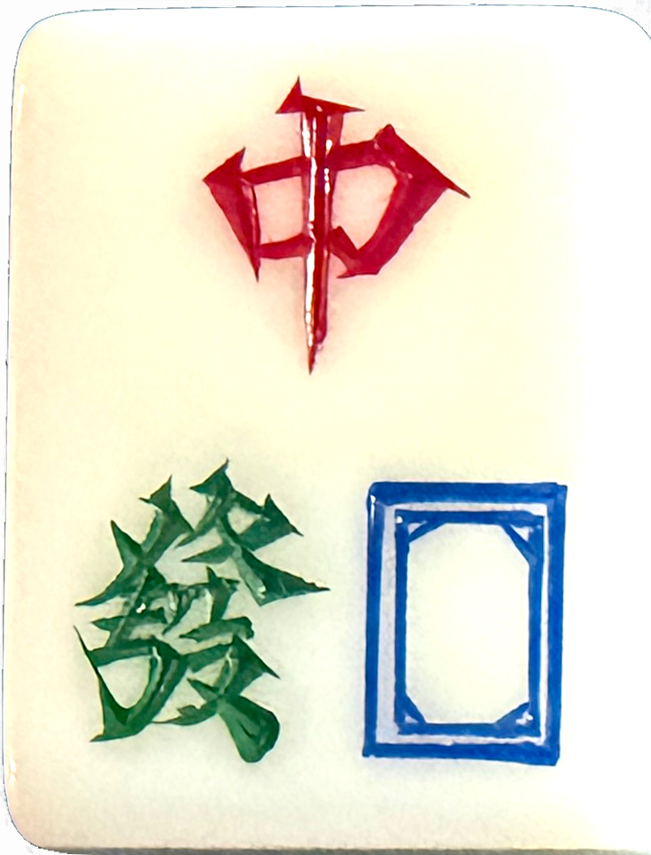
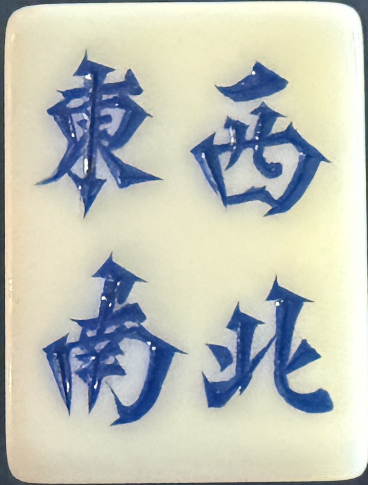
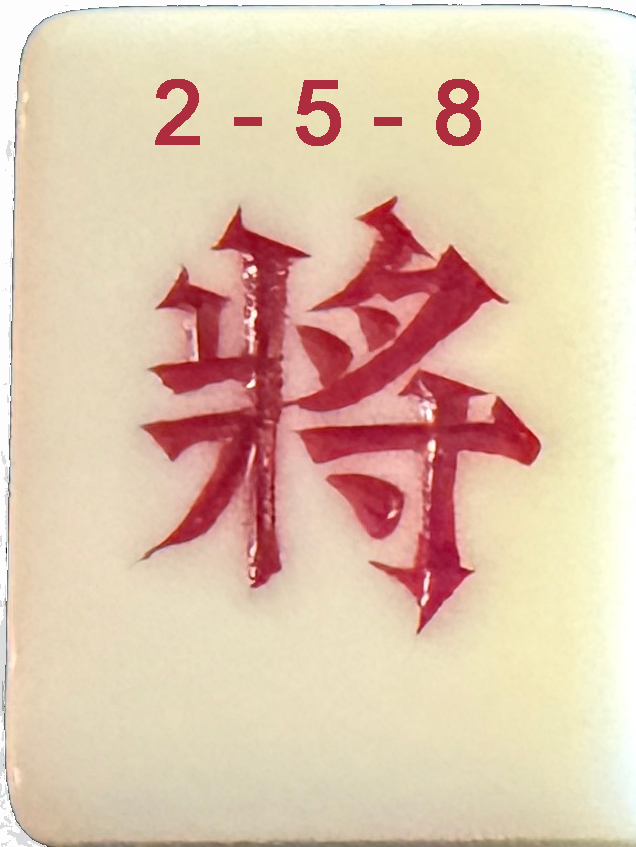
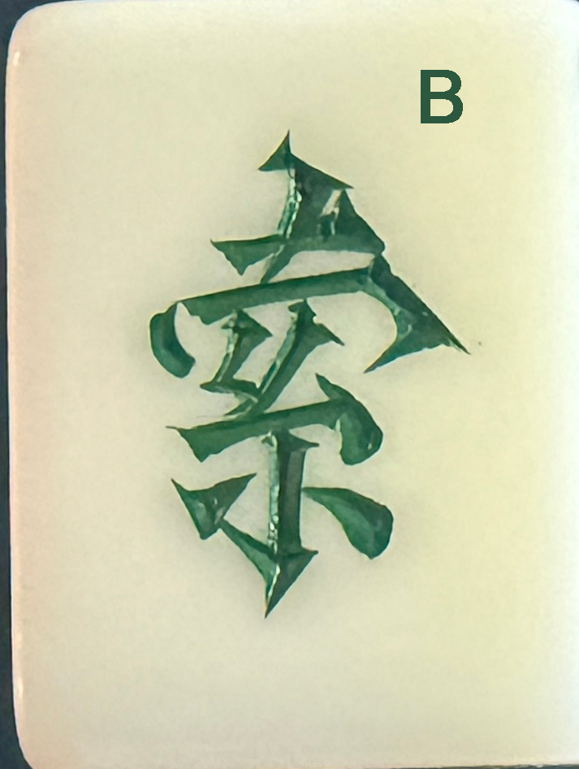
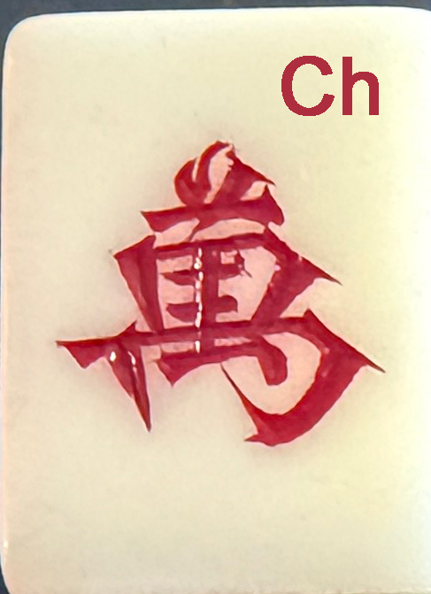
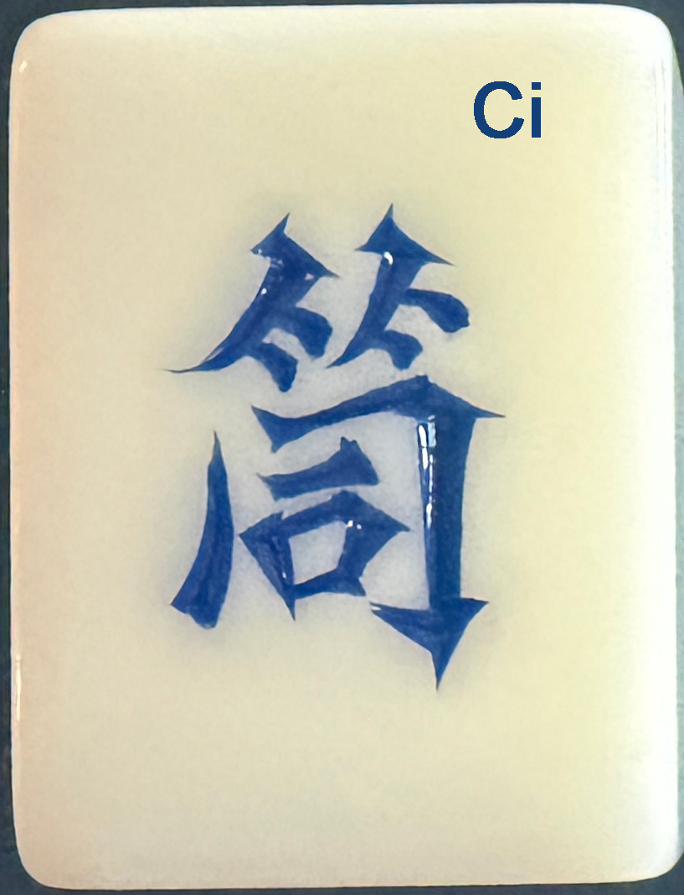
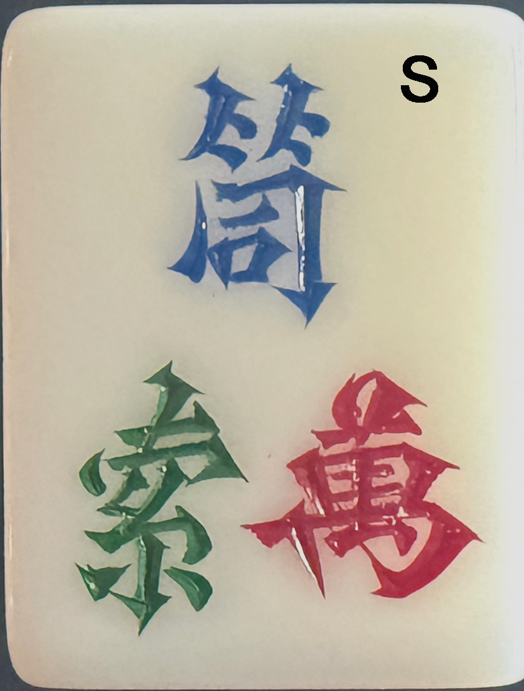
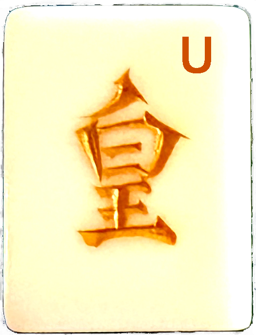

四风麻将
4 Winds Mahjong
Now on the App StoreThe most authentic Singapore-rules Mahjong on iPhone and iPad — two game modes, eight Joker tile types, strong AI opponents, and rules built by players who know the real game.
Two Game Modes
Classic Singapore rules or the strategic Vietnam HK variation — choose every game.
Singapore Mahjong
- Full 144-tile deck — or 148 with Animal tiles
- Classic flower, season and animal bonus tiles
- 19 distinct winning hands recognised & scored
- Fan-based scoring with monetary settlement
- Curfew rules when the wall runs low
- Ping Wu · All Pong · Half Color · Full Color and more
Vietnam · HK Variation
- 148-tile deck including 8 distinct Joker types
- Jokers substitute only for tiles they are compatible with
- Joker-extended Kongs, Pongs and Chows
- Joker picker — choose which Joker to play
- AI plays its least-flexible Joker first, preserving wildcards
- All Singapore winning hands, plus Joker-specific strategies
The 8 Joker Types
Each Joker substitutes only for the tiles it is compatible with — ranked from most specific to most powerful. The app always plays your least-flexible Joker first, keeping the Universal Joker in reserve for when you truly need it.

Dragon Red · Green · White Dragon only Most Specific
Wind East · South · West · North only
Two · Five · Eight The 2, 5 or 8 of any suit
Bamboo Any Bamboo tile (1–9)
Character Any Character tile (1–9)
Circle Any Circle tile (1–9)
Suit Any Bamboo, Character or Circle
Universal Substitutes for any tile whatsoever Most PowerfulWhy 4 Winds Mahjong?
Every feature has been shaped by real players, for real players.
19 Winning Hand Types — All Scored Correctly
Every recognised hand is identified, named and scored to the exact fan value — no guesswork, no shortcuts.
Strong AI Opponents
Three CPU players that think strategically — they read the discards, manage risk, and won't hand you an easy win. In Vietnam HK mode the AI automatically plays its least flexible Joker first, keeping powerful wildcards in reserve for when they matter most. This is not an easy game to beat.
Spoken Calls in Three Languages
Hear every Pong, Kong, Chow, Mahjong and tile call spoken aloud. Choose from Cantonese, Mandarin, English, or turn spoken calls off entirely — whichever feels most like home.
Smart Joker Controls
When multiple Jokers could complete your Pong, Kong or Chow, the app shows each option and lets you choose which one to play — so you always stay in control of your hand. A "Not Now" button on Kong offers means you're never locked in: decline freely, discard, and decide again next turn.
Animal Bonus Tiles — Optional
Play with the full set of Animal bonus tiles (Cat, Mouse, Cockerel, Centipede) for the classic Singapore experience, or disable them to match the preferences of your regular table.
Adjustable Fan Rules
Set the minimum and maximum number of fan (doubles) to suit your group's preferred stakes. Scores are tracked as monetary wins and losses, reflecting how the game is traditionally played.
Curfew Rules
Enable the traditional "curfew" rules that kick in when the wall runs low — the same end-game tension your regular table knows well.
Adjustable Game Speed
Prefer a relaxed pace or a fast-moving game? Dial the CPU animation and thinking speed to match your mood — from leisurely to brisk.
Sound Controls
Independent mute toggles for sound effects and background music, so you can play in silence, with ambient music, with tile sounds, or with the full experience — entirely your choice.
Built to play like the real thing.
Tested by experienced Mahjong players to make sure it does.